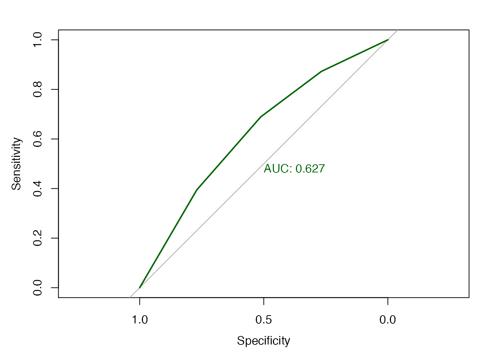
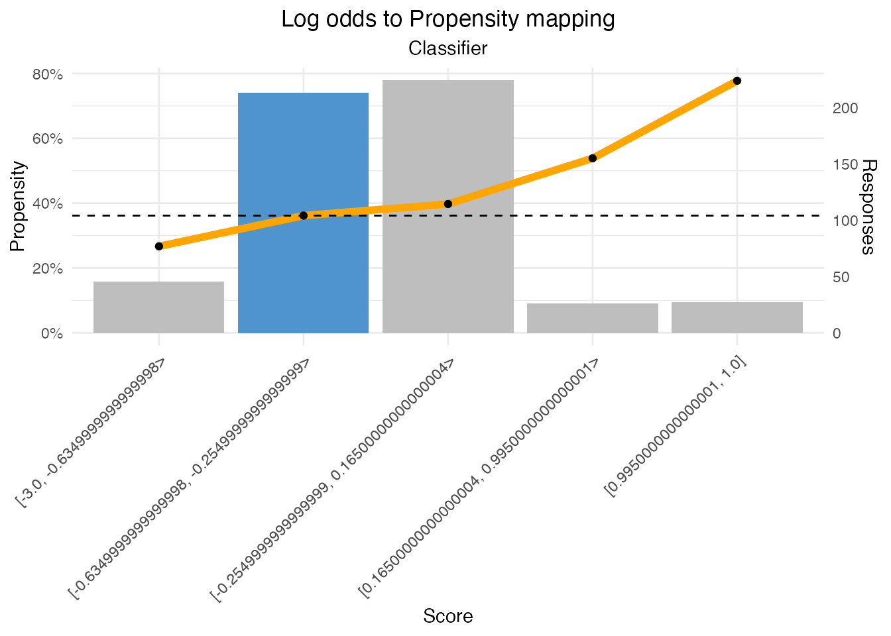

adm-explained.RmdWe will use one of the shipped datamart exports for the example. This is a model very similar to one used in some of the ADM PowerPoint/Excel deep dive examples. To load your own data, see the vignette on ADM reporting for examples.
library(cdhtools)
library(data.table)
data(admdatamart_models)
data(admdatamart_binning)
model <- admdatamart_models[ConfigurationName == "VerySimpleSalesModel" & Name == "PSDISCOUNT100"][SnapshotTime == max(SnapshotTime)]
modelpredictors <- admdatamart_binning[ModelID == model$ModelID & EntryType != "Inactive"]
predictorbinning <- modelpredictors[PredictorName == "COUNTRY"][order(BinIndex)]The selected model is:
| Group | Sales/Proactive |
| Name | PSDISCOUNT100 |
| Active Predictors | AGE, COUNTRY |
| Model Performance (AUC) | 58.4121 |
The ADM model report will show predictor binning similar to this, with all displayed data coming from fields in the ADM data mart:
| Name | COUNTRY |
| Range | No. symbols = 4 |
| Responses | 535 |
| # Bins | 4 |
| Predictor Performance (AUC) | 62.6549 |
| Range/Symbols | Responses (%) | Positives | Positives (%) | Negatives | Negatives (%) | Propensity (%) | Z-Ratio | Lift |
|---|---|---|---|---|---|---|---|---|
| Germany | 32.90 | 49 | 23.00 | 127 | 39.44 | 0.2784000 | -4.143733 | 0.699290 |
| US | 28.04 | 55 | 25.82 | 95 | 29.50 | 0.3667000 | -0.936563 | 0.920970 |
| Canada | 20.75 | 52 | 24.41 | 59 | 18.32 | 0.4685000 | 1.669249 | 1.176670 |
| Netherlands | 18.32 | 57 | 26.76 | 41 | 12.73 | 0.5816000 | 3.943655 | 1.460908 |
| Grand Total | 100.01 | 213 | 99.99 | 322 | 99.99 | 0.3981308 | 0.000000 | 1.000000 |
The counts of positive and negative responses in each bin are the only things that ADM tracks, the rest is derived from these. The percentages and totals are trivially derived, and the propensity is just the number of positives divided by the total as illustrated below:
binningDerived <- predictorbinning[, c(1,3,5)] # copy over only the labels, pos and neg counts
binningDerived[, `Responses %` := (Positives+Negatives)/(sum(Positives)+sum(Negatives))]
binningDerived[, `Positives %` := Positives/sum(Positives)]
binningDerived[, `Negatives %` := Negatives/sum(Negatives)]
binningDerived[, Propensity := (Positives)/(Positives+Negatives)]| Range/Symbols | Positives | Negatives | Responses % | Positives % | Negatives % | Propensity |
|---|---|---|---|---|---|---|
| Germany | 49 | 127 | 32.90 | 23.00 | 39.44 | 0.2784 |
| US | 55 | 95 | 28.04 | 25.82 | 29.50 | 0.3667 |
| Canada | 52 | 59 | 20.75 | 24.41 | 18.32 | 0.4685 |
| Netherlands | 57 | 41 | 18.32 | 26.76 | 12.73 | 0.5816 |
Lift is the ratio of the propensity in a particular bin over the average propensity. So a value of 1 is the average, larger than 1 means higher propensity, smaller means lower propensity:
binningDerived[, Lift := (Positives/(Positives+Negatives)) / (sum(Positives)/sum(Positives+Negatives))]| Range/Symbols | Positives | Negatives | Lift |
|---|---|---|---|
| Germany | 49 | 127 | 0.6993 |
| US | 55 | 95 | 0.9210 |
| Canada | 52 | 59 | 1.1767 |
| Netherlands | 57 | 41 | 1.4609 |
The Z-Ratio is also a measure of the how the propensity in a bin differs from the average, but takes into account the size of the bin and thus is statistically more relevant. It represents the number of standard deviations from the average, so centres around 0. The wider the spread, the better the predictor is.
\[\frac{posFraction-negFraction}{\sqrt(\frac{posFraction*(1-posFraction)}{\sum positives}+\frac{negFraction*(1-negFraction)}{\sum negatives})}\]
See also: http://techdocs.rpega.com/display/EPZ/2019/06/21/Z-ratio+calculation+in+ADM.
binningDerived[, posFraction := Positives/sum(Positives)]
binningDerived[, negFraction := Negatives/sum(Negatives)]
binningDerived[, `Z-Ratio` := (posFraction-negFraction)/sqrt(posFraction*(1-posFraction)/sum(Positives) + negFraction*(1-negFraction)/sum(Negatives))]| Range/Symbols | Positives | Negatives | posFraction | negFraction | Z-Ratio |
|---|---|---|---|---|---|
| Germany | 49 | 127 | 0.2300469 | 0.3944099 | -4.1437332 |
| US | 55 | 95 | 0.2582160 | 0.2950311 | -0.9365629 |
| Canada | 52 | 59 | 0.2441315 | 0.1832298 | 1.6692485 |
| Netherlands | 57 | 41 | 0.2676056 | 0.1273292 | 3.9436548 |
The predictor AUC is can be derived from the positives and negatives as well, e.g. using the pROC package.
library(pROC)
response = unlist(sapply(1:nrow(predictorbinning),
function(r){return(c(rep(T, predictorbinning$Positives[r]),
rep(F, predictorbinning$Negatives[r])))}))
prediction = unlist(sapply(1:nrow(predictorbinning),
function(r){return(rep(predictorbinning$`Propensity (%)`[r],
predictorbinning$Positives[r] +
predictorbinning$Negatives[r]))}))
plot.roc(response, prediction, print.auc=T, col="darkgreen", levels=c(T,F), direction=">")
The AUC can also be calculated directly from the positives and negatives using a utility function in cdhtools:
cdhtools::auc_from_bincounts(predictorbinning$Positives, predictorbinning$Negatives)
#> [1] 0.6265491The score is calculated from the log odds which are simply the ratio of the probabilities of positives and negatives. For the actual calculation in ADM this is modified slightly to avoid division-by-zero problems and is written differently to avoid numeric instability as shown below.
binningDerived[, posFraction := Positives/sum(Positives)]
binningDerived[, negFraction := Negatives/sum(Negatives)]
binningDerived[, `Log odds` := log(posFraction/negFraction)]
binningDerived[, `Modified Log odds` :=
log(Positives+1/.N) - log(sum(Positives+1)) -
log(Negatives+1/.N) + log(sum(Negatives+1))]| Range/Symbols | Positives | Negatives | posFraction | negFraction | Log odds | Modified Log odds |
|---|---|---|---|---|---|---|
| Germany | 49 | 127 | 0.2300469 | 0.3944099 | -0.5391074 | -0.5422443 |
| US | 55 | 95 | 0.2582160 | 0.2950311 | -0.1332843 | -0.1376366 |
| Canada | 52 | 59 | 0.2441315 | 0.1832298 | 0.2869657 | 0.2812741 |
| Netherlands | 57 | 41 | 0.2676056 | 0.1273292 | 0.7427386 | 0.7347766 |
To get to a propensity, the log odds of the relevant bins of the active predictors are added up and divided by the number of active predictors +1, then used to index in the classifier.
Below an example. From all the active predictors of the model for we pick a value (in the middle for numerics, first symbol for symbolics) and show the (modified) log odds. These log odds values are averaged (added up and divided by number of active predictors + 1), and this is the “score” that is mapped to a propensity value by the classifier (which is constructed using the PAV(A) algorithm).
| Name | Value | Bin | Positives | Negatives | Log odds |
|---|---|---|---|---|---|
| AGE | 30 | 3 | 15 | 44 | -0.6674720 |
| COUNTRY | US | 2 | 55 | 95 | -0.1376366 |
| Average Log odds | NA | NA | NA | -0.2683695 |
Below the classifier mapping. On the x-axis the binned scores (log odds values), on the y-axis the returned propensities. The bin that contains the score we calculated above is highlighted.
The score -0.2683695 falls in bin 2 of the classifier, so for this set of inputs, the model returns a propensity of 36.15%.
